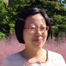
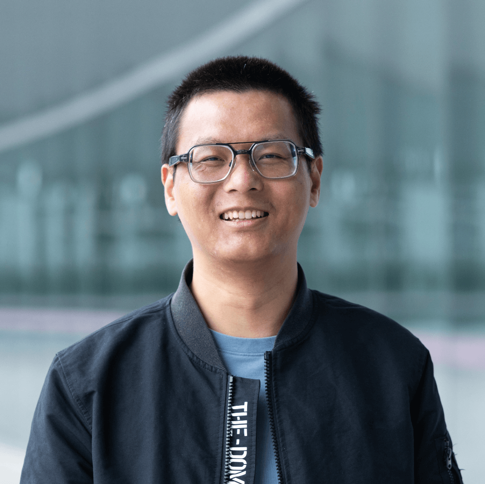
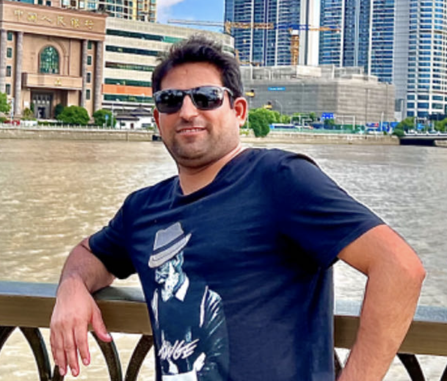
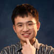
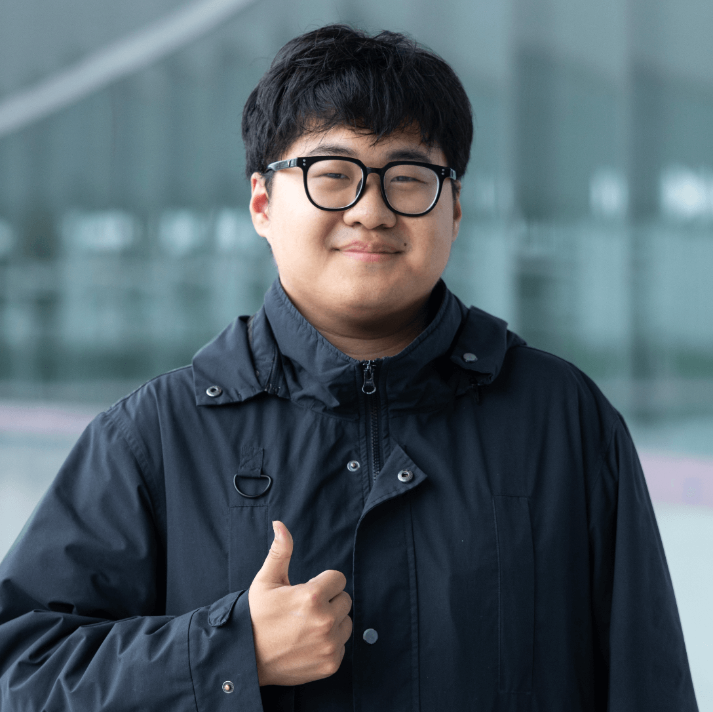
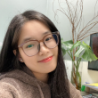

团队成员
-

赵云秀
博士后
zhaoyunxiu@westlake.edu.cn
博士. 韩国忠北大学. 2023
理学硕士. 中国三峡大学. 2018
理学学士. 西北师范大学. 2010
研究领域：探索生物手性分子自选选择；在科研求索之外，我非常喜欢阅读。
-

倪宇晴
博士后
Yuqing Ni@westlake.edu.cn
博士. 南京工业大学 , 2024
理学硕士. 南京工业大学, 2018
理学学士. 南京工业大学, 2015
研究领域：液液相分离，分子动力学后处理分析，二维红外光谱计算。工作之余，经常玩刺客信条，宝可梦，黑神话：悟空。
-

安瓦尔·哈亚特
博士后
博士. 北京工业大学，2021
硕士. 哈扎拉大学, 曼塞赫拉，巴基斯坦，2017
我的研究方向是设计、制造和表征光学材料和微腔，以调控光与物质的相互作用，主要用于激光并探索其生物医学应用。我喜欢足球、板球和旅行。 -

高梓民
科研助理
gaozimin@westlake.edu.cn
理学硕士. 云南大学. 2023
理学学士. 天津师范大学. 2020
我的研究兴趣是生物相分离机制。我负责细胞培养，蛋白表达纯化，相分离体系构建及红外、拉曼光谱分析。我的兴趣是登山和游泳。 -

聂凤桐
科研助理
niefengtong@westlake.edu.cn
理学学士. 华中科技大学, 2023
我在组里负责的工作内容是：原子力显微镜观察脂质支撑膜表面结构特征以及2DIR仪器的调试使用。工作之余我喜欢各种运动，像是篮球、羽毛球、徒步等等。有时我也喜欢和朋友们一起打游戏放松。 -

任婷婷
科研助理
rentingting@westlake.edu.cn
农学硕士. 延边大学，2025
工学学士. 齐鲁工业大学，2022
我的工作是维护团队网站，并负责 2DIR 仪器的运行与故障排查，保障实验室线上线下协同高效运作，确保实验流程顺畅、信息获取清晰便捷。业余生活我兴趣爱好广泛，喜欢运动、音乐、旅行，更热衷于探索新鲜事物，主动迎接各式挑战，在不断解锁多元体验中感受生活的乐趣。 -

黄丹
行政助理
huangdan@westlake.edu.cn
管理学学士. 郑州升达经贸管理学院. 2016
我负责实验室和团队的日常运营。工作之外我喜欢打网球。